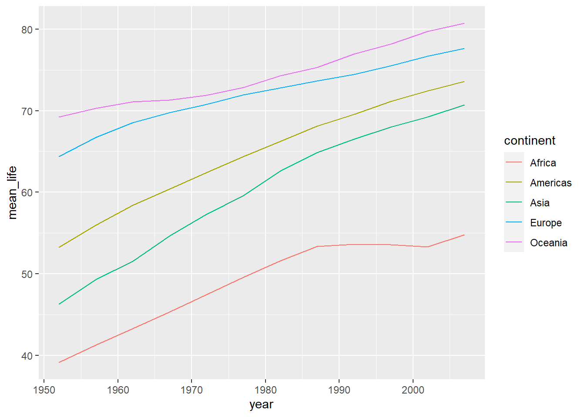
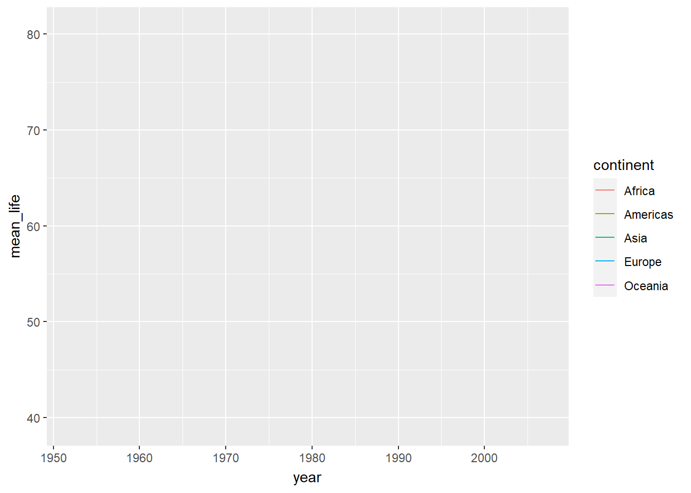

# A tibble: 6 × 6
country continent year lifeExp pop gdpPercap
<fct> <fct> <int> <dbl> <int> <dbl>
1 Afghanistan Asia 1952 28.8 8425333 779.
2 Afghanistan Asia 1957 30.3 9240934 821.
3 Afghanistan Asia 1962 32.0 10267083 853.
4 Afghanistan Asia 1967 34.0 11537966 836.
5 Afghanistan Asia 1972 36.1 13079460 740.
6 Afghanistan Asia 1977 38.4 14880372 786.
grafica básica
# Grfica de puntos que muestre la esperanza de vida a lo largo de los añosgapminder %>%group_by(year, continent) %>%# creamos una variable mean_life que tenga la media de la esperanza de vidasummarize(mean_life =mean(lifeExp)) %>%# Elemenros esteticosggplot(aes(x = year,y = mean_life,color = continent)) +geom_line()
`summarise()` has grouped output by 'year'. You can override using the
`.groups` argument.

#2. Animando la grafica
# Grfica de puntos que muestre la esperanza de vida a lo largo de los añosgapminder %>%group_by(year, continent) %>%# creamos una variable mean_life que tenga la media de la esperanza de vidasummarize(mean_life =mean(lifeExp)) %>%# Elemenros esteticosggplot(aes(x = year,y = mean_life,color = continent)) +geom_line() +# gganimate, grafica con movimiento, creciendo a lo largo de los añostransition_reveal(year)
`summarise()` has grouped output by 'year'. You can override using the
`.groups` argument.
`geom_line()`: Each group consists of only one observation. ℹ Do you need to
adjust the group aesthetic?
`geom_line()`: Each group consists of only one observation. ℹ Do you need to
adjust the group aesthetic?

#3. Mejorando animacion
# Grfica de puntos que muestre la esperanza de vida a lo largo de los añosgapminder %>%group_by(year, continent) %>%# creamos una variable mean_life que tenga la media de la esperanza de vidasummarize(mean_life =mean(lifeExp)) %>%# Elemenros esteticosggplot(aes(x = year,y = mean_life,color = continent)) +# Aumentamos el tamañogeom_line(size =2) +# colocar lineas y puntos al mismo tiempogeom_point(size =4) +# se escriben etiquetas en otra capa, frame_along hace que el año cambien despues de endlabs(color ='CONTINENTES', title ='Esperanza de vida en {frame_along}',x ='Fecha', y ='Años de Vida') +theme_minimal() +# gganimate, grafica con movimiento, creciendo a lo largo de los añostransition_reveal(year)
`summarise()` has grouped output by 'year'. You can override using the
`.groups` argument.
Warning: Using `size` aesthetic for lines was deprecated in ggplot2 3.4.0.
ℹ Please use `linewidth` instead.
`geom_line()`: Each group consists of only one observation.
ℹ Do you need to adjust the group aesthetic?
`geom_line()`: Each group consists of only one observation.
ℹ Do you need to adjust the group aesthetic?